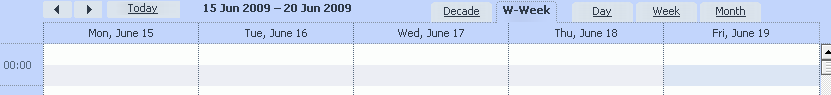
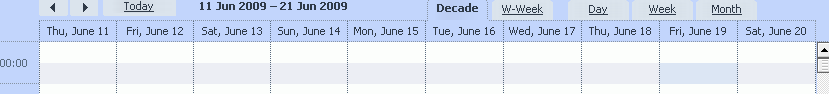

Custom views in dhtmlxScheduler
Required steps
dhtmlxScheduler provides 3 default views
- month
- week
- day
It possible to add custom views ( without any modifications in source code )
To add new view, the next steps need to be executed
- add new button to html template
- define method, which will return start of period for provided date
- define method, which will return end of period for provided date
- define method, which describe how custom period can be added
- define formats of x and y scale for custom view
Work week view
Final code, can be checked in samples/sample_custom_view.html
add new button to html template
<div class="dhx_cal_tab" name="day_tab" style="right:204px;"></div> <div class="dhx_cal_tab" name="week_tab" style="right:140px;"></div> <div class="dhx_cal_tab" name="workweek_tab" style="right:280px;"></div> <div class="dhx_cal_tab" name="month_tab" style="right:76px;"></div>
scheduler.locale.labels.workweek_tab = "W-Week"
the name attribute of tab container defines name of new mode, workweek in our case
define method, which will return start of period for provided date
scheduler.date.workweek_start = scheduler.date.week_start;
We are reusing logic of default week view.
define method, which will return end of period for provided date
scheduler.date.get_workweek_end=function(date){ return scheduler.date.add(date,5,"day"); }
The end date of workweek is in 5 days after its start.
define method, which describe how custom period can be added
scheduler.date.add_workweek=function(date,inc){ return scheduler.date.add(date,inc*7,"day"); }
As you can see, in difference with previous method, with one adds 7 days, so we get a date of next work week start.
define formats of x and y scale for custom view
scheduler.templates.workweek_date = scheduler.templates.week_date; scheduler.templates.workweek_scale_date = scheduler.templates.week_scale_date;
Scale settings copied from weekly view.
All above result in new view

Decade view
Final code, can be checked in samples/sample_custom_view.html
add new button to html template
<div class="dhx_cal_tab" name="day_tab" style="right:204px;"></div> <div class="dhx_cal_tab" name="week_tab" style="right:140px;"></div> <div class="dhx_cal_tab" name="decade_tab" style="right:345px;"></div> <div class="dhx_cal_tab" name="month_tab" style="right:76px;"></div>
scheduler.locale.labels.decade_tab = "Decade"
the name attribute of tab container defines name of new mode, decade in our case
define method, which will return start of period for provided date
scheduler.date.decade_start = function(date){ var ndate = new Date(date.valueOf()); ndate.setDate(Math.floor(date.getDate()/10)*10+1); return this.date_part(ndate); }
Round current date to nearest decade start.
define method, which will return end of period for provided date
Because for decade end of period and start of next one is the same date, we just skip this step
define method, which describe how custom period can be added
scheduler.date.add_decade=function(date,inc){ return scheduler.date.add(date,inc*10,"day"); }
define formats of x and y scale for custom view
scheduler.templates.decade_date = scheduler.templates.week_date; scheduler.templates.decade_scale_date = scheduler.templates.week_scale_date;
Scale settings copied from weekly view.
All above result in new view

Setting custom view as default one
You can use the name of custom view as third parameter of init command, but you need to be sure that on moment of init call, the view related methods are already defined. In above code snippets those methods are based on default one which is available only after view creating
To break this cross dependency , the “onTemplatesReady” event can be used
scheduler.attachEvent("onTemplatesReady",function(){ //place here the code for custom view scheduler.date.workweek_start... }) scheduler.init("scheduler_here",null,"workweek");
All rights reserved.